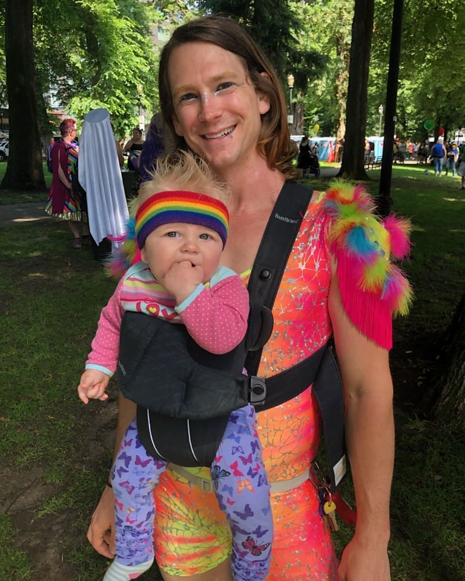
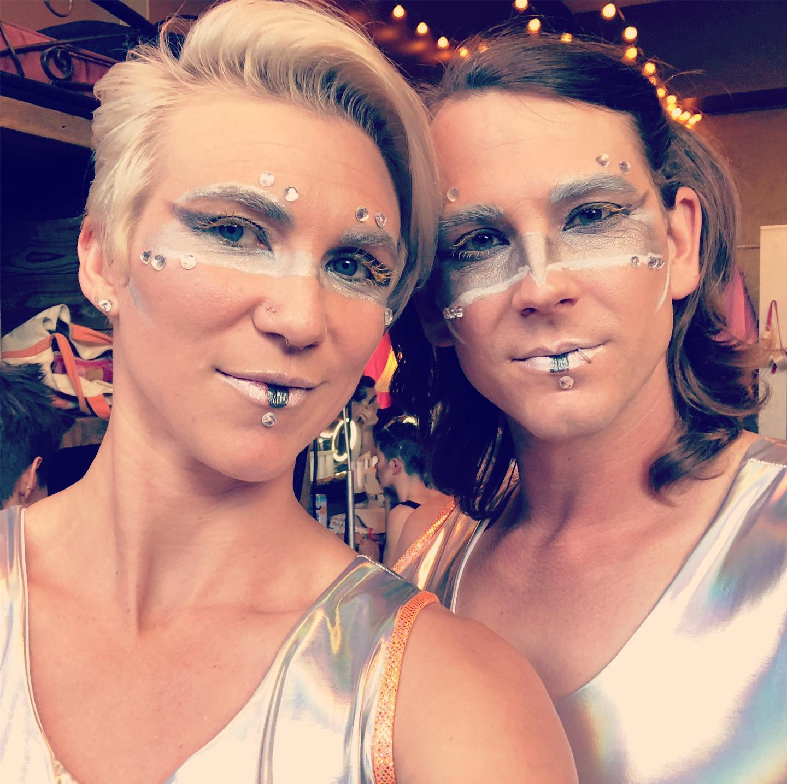
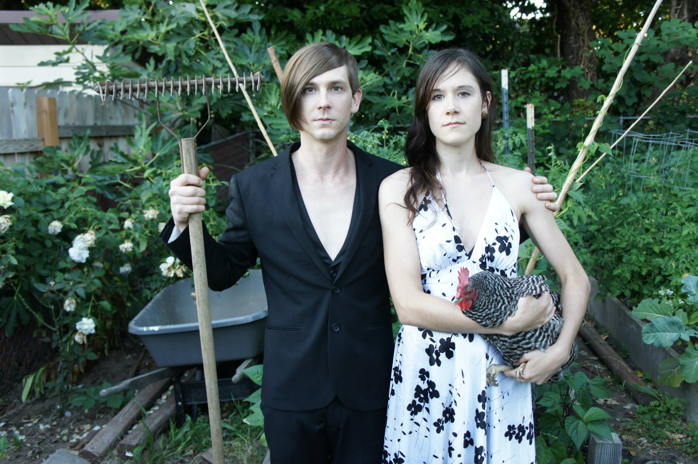
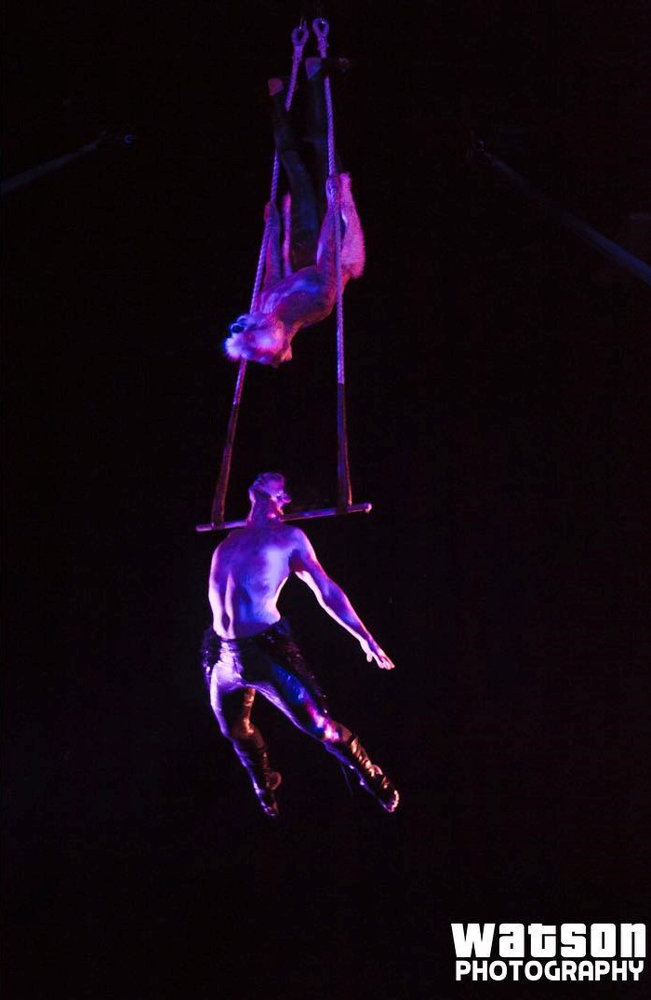
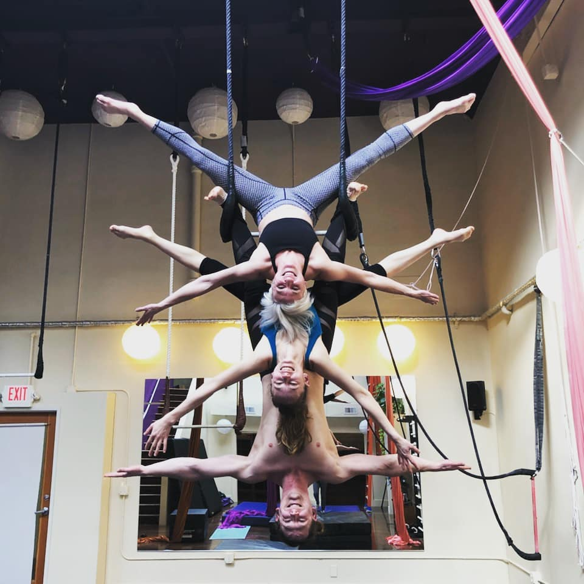
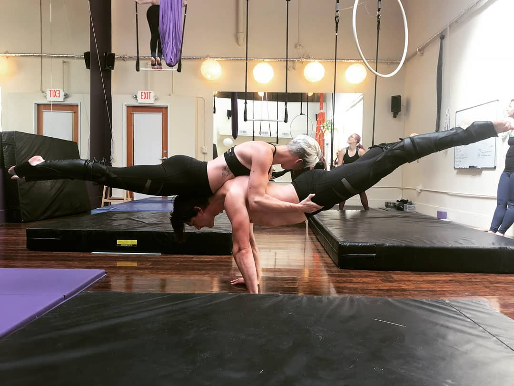
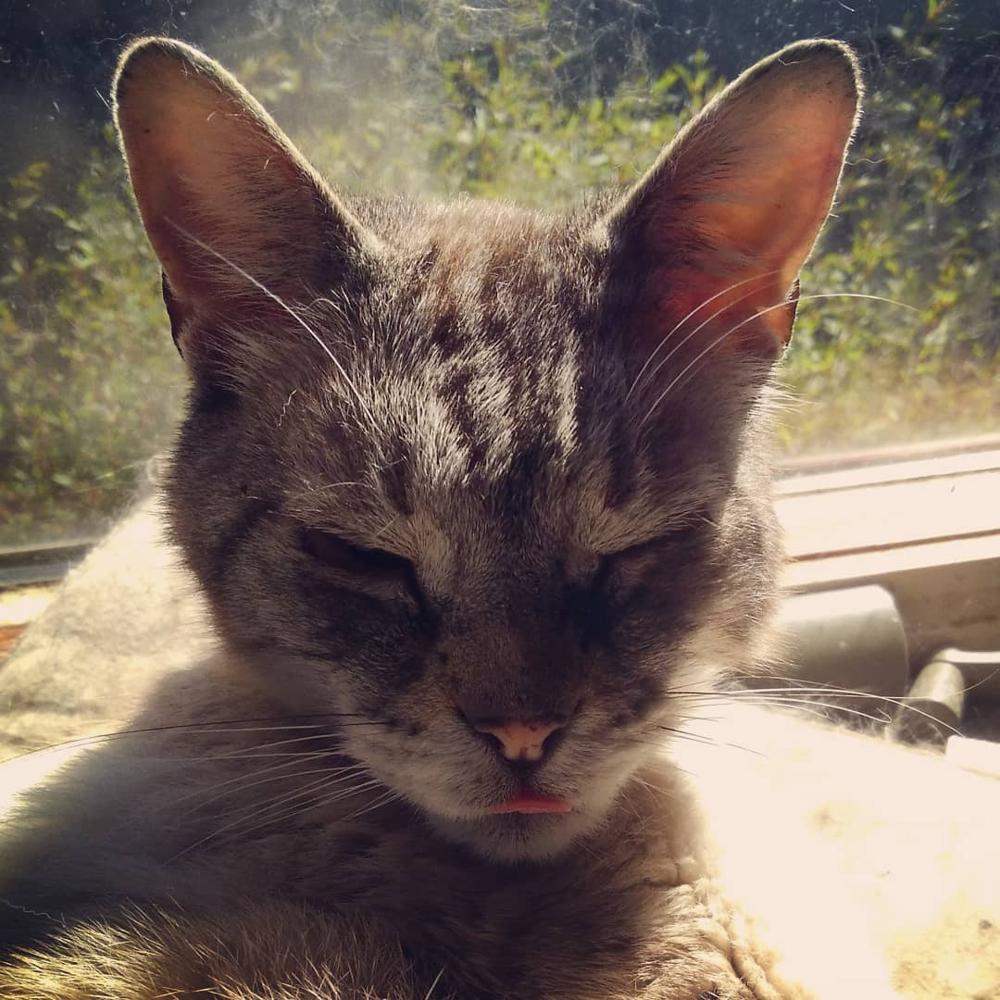

Hi, I'm Dylan Corvidae. To the left is my child Kaon. To the right is my partner
Bentley. Below is my partner Elizabeth.


Circus
I am a circus performer

Duo Dance Trapeze
Trio Static Trapeze
Burlesque Chair Dance
Handbalancing


Music
I play a lot of different instruments. I started out playing trumpet in elementary school.
then in high school I picked up a guitar and never looked back. In college I started composing electronic music
and had to start learning piano. I can play bass, but I play bass like a guitarist. I love to
experiment with sound, hence I own many effects pedals. I play guitar with a cello bow,
ebow, slide, trem picking, tapping, drumsticks, whatever I can think of I try. Life and art
are about creation, experimentation, and pushing boundaries.
Animal Friends
There are 4 cats that cohabitat with my flock.
Space Cat
Ender
Mort
CMO
Quiz Time!
Dylan was sucked into the computer through the use of black
code magic they don't understand. Can you save them and return
them to their family?
 I play a lot of different instruments. I started out playing trumpet in elementary school.
then in high school I picked up a guitar and never looked back. In college I started composing electronic music
and had to start learning piano. I can play bass, but I play bass like a guitarist. I love to
experiment with sound, hence I own many effects pedals. I play guitar with a cello bow,
ebow, slide, trem picking, tapping, drumsticks, whatever I can think of I try. Life and art
are about creation, experimentation, and pushing boundaries.
I play a lot of different instruments. I started out playing trumpet in elementary school.
then in high school I picked up a guitar and never looked back. In college I started composing electronic music
and had to start learning piano. I can play bass, but I play bass like a guitarist. I love to
experiment with sound, hence I own many effects pedals. I play guitar with a cello bow,
ebow, slide, trem picking, tapping, drumsticks, whatever I can think of I try. Life and art
are about creation, experimentation, and pushing boundaries.